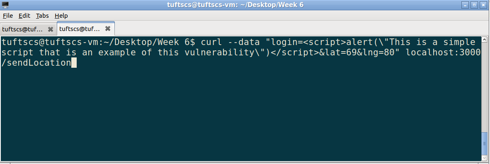
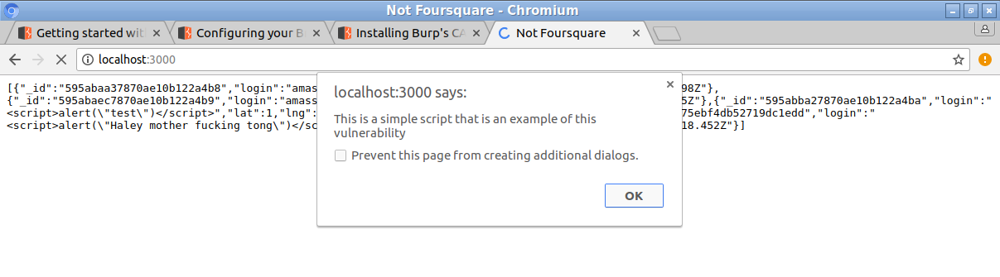
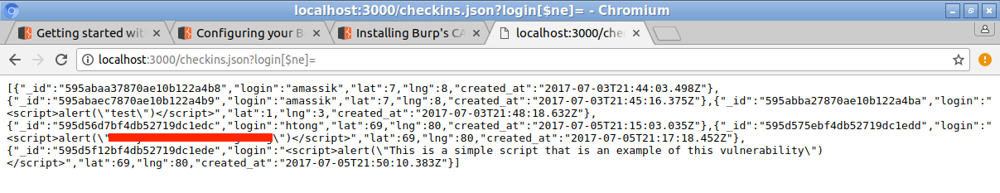
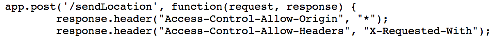

The website delivered is a checkin based website that logs users locations (in latitude, longitude format), username, and the time of their submission. Checkins are added using the HTTP POST method on a route of the site, which allows the users to add their own username and lat/lng coordinates. The other route of the site gives the checkin logs in JSON format given a query (i.e. search for checkins by mchow).
I have been hired to test the security of this web app by attempting to penetrate the database through a variety of methods. By doing this I hope to better understand how a web app can be better protected from these issues.
To test this app I will use a variety of tools available to me. The first pass through that I have made was to explore the site with my browser (Chrome), and curl to get a feel for the operation of the site. When using curl I quickly began to play with posting requests, and immediately found that the input validation was lacking. Following up with more probing I also noticed that query string injection was problematic when looking at the checkins.json page because there are no restrictions on the access users have to data or the requests they can submit. My third step (not necessarily in order) was to look at the source code to search for problems. When looking at the code, I was able to affirm the lack of restrictions of input, and also noticed that CORS was enabled unilaterally for the post section of the app, which seems to be extremely problematic and a huge vulnerability.
The first and most prominent issue that I found with the site is that it does not properly validate input, which renders it vulnerable to cross site scripting (XSS). XSS is a problem because it allows anyone who visits the site to add potentially malicious code to the app under the guise of good input. The second issue is a vulnerability to query string injection, which means that a user has access to all of the database's data and can potentially alter it by creating a query string that is malicious. The last issue is the fact that CORS is enabled unilaterally, which means that the scripts I mentioned earlier can not only make the web app itself unsafe by posting scripts, but it can cause damage to the database itself, because they are given indisciminant access to the data (a simple example is that one of these scripts could steal or alter the contents of the database relativly easily).
Location: /sendLocation checkin page when recieving the data from the user.
Severity: This issue is catastrophic. Given the wide range of harm that can be inflicted using javascript scripts, a malicious attacker would be able to do anything from logging other user's inputs to changing the structure of the page.
Description: I located this issue within the first few minutes of using curl to post checkin's, and realized that there is essentially no validation of the input (i.e. it just takes input as given as opposed to returning an error when suspect characters are inputted "{}" for example). Because input is not double checked, all users are allowed to submit any type of content they would like.
Screenshots:
This command injects a harmless and simple script into the app using the login section, but could easily be replaced with any myriad of other scripts
This image is proof of the above script injection on the app
Location: /checkins.json page through altering the wuery string of the url.
Severity: This issue is fairly severe because it allows the user to gain access to the database beyond just simple query searches, and also would enable the injection of scripts, thus enabling another point of access to the database for malicious purposes.
Description: Ming first tipped me to this issue with the sample link to "https://defense-in-derpth.herokuapp.com/checkins.json?login=mchow". From here I realized that we could use the option [$ne] paired with a null string to list all of the entries from the site. Following this I inferred from the reading that a script could easily be injected in this fashion into the app to take advantage of the database.
Screenshots:
This shows a simple query string that returns all of the values of the database (my local one is tiny, but the effect holds for larger examples)
Location: /sendLocation source code.
Severity: Critical, this issue is a vulnerability that makes it possible for any web app in the world to abuse the database, with behavior ranging from cloning the database, to potentially changing its data with scripts.
Description: This issue is immediately apparent when looking at the source code, specifically lines 17 and 18, where universal cross origin requests are allowed. Essentially the problem with this is that if they really want to, an external source is able to have their way with the database and the safety of data is nonexistent. Above all else, this is fundamentally bad coding practice in web design, because even though it may not be an issue on such a small app, it is a habit that should be broken for future projects because if and when only selected requests should be allowed, it is paramount that they are filtered.
Screenshots:
This is the line of code that enables Universal CORS, and the one that will create problems in the future.
To conclude, this web app has at least three sizeable security concerns that are easily abusable with malicious intent. My recommendation for going forward is to work to secure the app by better validating the input that is recieved from all sources including but not limited to queries and http POST requests. I also recommend that CORS is either disabled or limited to trusted domains to avoid problems in the future.